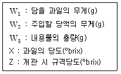
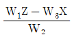
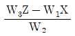
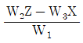
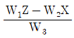
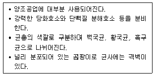

식품산업기사 (2020-06-06 기출문제)
1과목: 식품위생학
1. 하천수의 DO가 적을 때 그 의미로 가장 적합한 것은?
- 오염도가 낮다.
- 오염도가 높다.
- 부유물질이 많다.
- 비가 온지 얼마 되지 않았다.
(정답률: 74%)

2. 식품첨가물에서 가공보조제에 대한 설명으로 틀린 것은?
- 기술적 목적을 위해 의도적으로 사용된다.
- 최종 제품 완성 전 분해, 제거되어 잔류하지 않거나 비의도적으로 미량 잔류할 수 있다.
- 식품의 입자가 부착되어 고형화되는 것을 감소시킨다.
- 살균제, 여과보조제, 이형제는 가공보조제이다.
(정답률: 54%)
3. 병에 걸린 동물의 고기를 섭취하거나 병에 걸린 동물을 처리, 가공할 때 감염될 수 있는 인수공통감염병은?
- 디프테리아
- 폴리오
- 유행성 간염
- 브루셀라병
(정답률: 75%)
4. 지표미생물의 자격요건으로서 거리가 먼 것은?
- 분변 및 병원균들과의 공존 또는 관련성
- 분석 대상 시료의 자연적 오염균
- 분석 시 증식 및 구별의 용이성
- 병원균과 유사한 안정성(저항성)
(정답률: 60%)
5. 통조림 용기로 가공할 경우 납과 주석이 용출되어 식품을 오염시킬 우려가 가장 큰 것은?
- 어육
- 식육
- 과실
- 연유
(정답률: 83%)
6. 유해물질에 관련된 사항이 바르게 연결된 것은?
- Hg – 이타이이타이병 유발
- DDT - 유기인제
- Parathion – Cholinesterase 작용 억제
- Dioxin – 유행성 무기화합물
(정답률: 68%)
7. 민물고기의 생식에 의하여 감염되는 기생충증은?
- 간흡충증
- 선모충증
- 무구조충
- 유구조충
(정답률: 88%)
8. 살균을 목적으로 사용되는 자외선 등에 대한 설명으로 틀린 것은?
- 자외선의 투과력이 약하다.
- 불투명체 조사 시 반대방향은 살균되지 않는다.
- 자외선은 사람이 직시해도 좋다.
- 조리실내의 살균, 도마나 조리기구의 표면 살균에 이용된다.
(정답률: 85%)
9. 포스드 하베스트(post harvest) 농약이란?
- 수확 후의 농산물의 품질을 보존하기 위하여 사용하는 농약
- 소비자의 신용을 얻기 위하여 사용하는 농약
- 농산물 재배 중에 사용하는 농약
- 농산물에 남아 있는 잔류농약
(정답률: 83%)
10. 살모넬라균 식중독의 대한 설명으로 틀린 것은?
- 달걀, 어욱, 연제품 등 광범위한 식품이 오염원이 된다.
- 조리·가공 단계에서 오염이 증폭되어 대규모 사건이 발생하기도 한다.
- 애완동물에 의한 2차 오염은 발생하지 않으므로 식품에 대한 위생 관리로 예방할 수 있다.
- 보균자에 의한 식품오염도 주의를 하여야 한다.
(정답률: 87%)
11. 식품공장 폐수와 가장 관계가 적은 것은?
- 유기성 폐수이다.
- 무기성 폐수이다.
- 부유물질이 많다.
- BOD가 높다.
(정답률: 81%)
12. 각 위생동물과 관련된 식품, 위해와의 연결이 틀린 것은?
- 진드기 : 설탕, 화학조미료 - 진드기뇨증
- 바퀴벌레 : 냉동 건조된 곡류 - 디프테리아
- 쥐 : 저장식품 - 장티푸스
- 파리 : 조리식품 - 콜레라
(정답률: 76%)
13. 식용색소황색제4호를 착색료로 사용하여도 되는 식품은?
- 커피
- 어육소시지
- 배추김치
- 식초
(정답률: 85%)
14. 식품 매개성 바이러스가 아닌 것은?
- 노로바이러스
- 로타바이러스
- 레트로바이러스
- 아스트로바이러스
(정답률: 63%)
15. Verotoxin에 대한 설명이 아닌 것은?
- 단백질로 구성
- E.coli O157:H7이 생산
- 담즙 생산에 치명적 영향
- 용혈성 요독 증후군 유발
(정답률: 57%)
16. 식품위생법상 “화학적 합성품”의 정의는?
- 화학적 수단으로 원소 또는 화합물에 분해반응 외의 화학반응을 일으켜서 얻은 물질을 말한다.
- 물리·화학적 수단에 의하여 첨가·혼합·침윤의 방법으로 화학반응을 일으켜 얻은 물질을 말한다.
- 기구 및 용기·포장의 살균·소독의 목적에 사용되어 간접적으로 식품에 이행될 수 있는 물질을 말한다.
- 식품을 제조·가공 또는 보존함에 있어서 식품에 첨가·혼합·침윤 기타의 방법으로 사용되는 물질을 말한다.
(정답률: 67%)
17. 우리나라 남해안의 항구와 어항 주변의 소라, 고동 등에서 암컷에 수컷의 생식기가 생겨 불임이 되는 임포섹스(imposex)현상이 나타나게 된 원인 물질은?
- 트리뷰틸주석(tributyltin)
- 폴리클로로비페닐(polychrolobiphenyl)
- 트리할로메탄(trihalonethanc)
- 디메틸프탈레이트(dimerhyl phthalate)
(정답률: 77%)
18. 영하의 조건에서도 자랄 수 있는 전형적인 저온성 병원균(psychrotrophic pathalate)은?
- Vibrio parahaemolyticus
- Clostridium perfringens
- Yersinia enterocolitica
- Bacillus cereus
(정답률: 73%)
19. 식품 위생검사 시 일반세균수(생균수)를 측정하는데 사용되는 것은?
- 표준한천평판배지
- 젖당부용발표관
- BGLB 발효관
- SS 한천배양기
(정답률: 89%)
20. 간장에 사용할 수 있는 보존료는?
- benzoic acid
- sorbic acid
- ß- naphthol
- penicillin
(정답률: 62%)
2과목: 식품화학
21. 식품 중의 회분(%)을 회화법에 의해 측정할 때 계산식이 옳은 것은? (단, S: 건조 전 시료의 무게, W: 회화 후의 회분과 도가니의 무게, W0: 회화 전의 도가니 무게)
- [(W-S)/W0] x 100
- [(W0-W)/S] x 100
- [(W-W0)/S] x 100
- [(S-W0)/W] x 100
(정답률: 70%)
22. 전분(starch)의 글루코사이드(glicoside)결합을 가수분해하는 효소인 ß-amylase의 작용은?
- 전분 분자의 α-1,4 결합을 임의의 위치에서 크게 가수분해 하여 maltose나 dextrin을 생성한다.
- 전분에서 glucose만을 1개씩 분리한다.
- 전분의 α-1,4 결합을 말단에서부터 분해하여 ß-amylase단위로 분리시킨다.
- 전분의 α-1,6 결합을 분리시킨다.
(정답률: 68%)
23. pH 3 이하의 산성에서 검정콩의 색깔은?
- 검정색
- 청색
- 녹색
- 적색
(정답률: 66%)
24. 달걀 흰자나 납두 등에 젓가락을 넣어 당겨 올리면 실을 빼는 것과 같이 되는 현상은?
- 예사성
- 바이센 베르그의 현상
- 경점성
- 신정성
(정답률: 52%)
25. 칼슘은 직접적으로 어떤 무기질의 비율에 따라 체내 흡수가 조절되는가?
- 마그네슘
- 인
- 나트륨
- 칼륨
(정답률: 67%)
26. 관능적 특성의 영향요인들 중 심리적 요인이 아닌 것은?
- 기대오차
- 습관에 의한 오차
- 후광효과
- 억제
(정답률: 69%)
27. 염장 초기의 식품에 있어서 자유수, 결합수의 양은 어떻게 변화하는가?
- 전체 수분에 대한 자유수의 비율은 감소하고 결합수의 비율은 증가한다.
- 전체 수분에 대한 자유수의 비율은 증가하고 결합수의 비율은 감소한다.
- 전체 수분에 대한 자유수의 비율은 증가하고 결합수의 비율도 증가한다.
- 전체 수분에 대한 자유수의 비율은 감소하고 결합수의 비율도 감소한다.
(정답률: 73%)
28. 관능검사의 묘사분석 방법 중 하나로 제품의 특성과 강도에 대한 모든 정보를 얻기 위하여 사용하는 방법은?
- 텍스쳐 프로필
- 향미 프로필
- 정량적 묘사분석
- 스펙트럼 묘사분석
(정답률: 71%)
29. 녹말이 소화될 때 발생하는 분해산물이 아닌 것은?
- α-dextrin
- glucose
- lactose
- maltose
(정답률: 73%)
30. 유화액의 형태에 영향을 주는 조건이 아닌 것은?
- 유화제의 성질
- 물과 기름의 비율
- 물과 기름의 온도
- 물과 기름의 첨가 순서
(정답률: 57%)
31. 효소와 그 작용기질의 짝이 잘못된 것은?
- α-amylase : 전분
- ß-amylase : 섬유소
- trypsin : 단백질
- lipase : 지방
(정답률: 75%)
32. 아밀로오스 분자의 비환원성 말단에 작용하여 맥아당 단위로 가수분해하는 효소는?
- α-amylase
- ß-amylase
- Glucoamylase
- Isoamylase
(정답률: 59%)
33. 유지의 자동산화에 대한 다음 설명 중 틀린 것은?
- 유지의 유도기간이 지나면 유지의 산소 흡수속도가 급증한다.
- 식용유지가 자동산화 되면 과산화물가가 높아진다.
- 식용유지의 자동산화 중에는 과산화물의 형성과 분해가 동시에 발생한다.
- 올레산은 리놀레산보다 약 10배 이상 빨리 산화된다.
(정답률: 67%)
34. 등전점이 pH 10인 단백질에 대한 설명으로 옳은 것은?
- 구성 아미노산 중에 염기성 아미노산의 함량이 많다.
- 구성 아미노산 중에 산성 아미노산의 함량이 많다.
- 구성 아미노산 중에 중성 아미노산의 함량이 많다.
- 구성 아미노산 중에 염기승, 산성, 중성 아미노산의 함량이 같다.
(정답률: 75%)
35. 파인애플, 죽순, 포도 등에 함유되어 있는 주요 유기산은?
- 초산(acetic acid)
- 구연산(citric acid)
- 주석산(tartaric acid)
- 호박산(succinic acid)
(정답률: 62%)
36. 다음 중 식품의 수분정량법이 아닌 것은?
- 건조감량법
- 증류법
- Karl-Fisher법
- 자외선 사용법
(정답률: 77%)
37. 유지를 튀김에 사용하였을 때 나타나는 화학적인 현상에 대한 설명으로 옳은 것은?
- 산가가 감소한다.
- 산가가 변화하지 않는다.
- 요오드가가 감소한다.
- 요오드가가 변화하지 않는다.
(정답률: 77%)
38. 산성식품과 알칼리성식품에 대한 설명으로 틀린 것은?
- 무기질 중 PO43-, SO42- 등 음이온을 생성하는 것은 산생성 원소이다.
- 해조류, 과실류, 채소류는 알칼리성 식품이다.
- 육류, 곡류는 산성 식품이다.
- 식품 100g을 회화하여 얻은 회분을 알칼리화하는데 소비되는 0.1N NaOH의 ml수를 알칼리도라고 한다.
(정답률: 58%)
39. 지방의 자동산화에 가장 크게 영향을 주는 것은?
- 산소
- 당류
- 수분
- pH
(정답률: 71%)
40. Vitamin B12의 구조에 함유되어 있는 무기질은?
- Zn
- Co
- Cu
- Mo
(정답률: 65%)
3과목: 식품가공학
41. 개량식 간장 제조 시 장달임의 목적이 아닌 것은?
- 갈색향상
- 향미부여
- 청징
- 숙성시간 단축
(정답률: 61%)
42. 현미는 어느 부위를 벗겨낸 것인가?
- 과종피
- 왕겨층
- 배아
- 겨층
(정답률: 71%)
43. 버터 제조 시 크림층의 지방구막을 파괴시켜 버터입자를 생성시키는 조작은?
- 교동(churning)
- 숙성(aging)
- 연압(working)
- 중화(neutralizing)
(정답률: 70%)
44. 두부 제조 시 두부의 응고 정도에 미치는 영향이 가장 적은 것은?
- 응고제의 색
- 응고온도
- 응고제의 종류
- 응고제의 양
(정답률: 85%)
45. 달걀 선도의 간이 검사법이 아닌 것은?
- 외관법
- 진음법
- 투시법
- 건조법
(정답률: 74%)
46. 육질의 결착력과 보수력을 부여하는 첨가물은?
- MSG(Monosodiumglutamate)
- ATP(Adenosine trihydroxyanisole)
- 인산염
- BHA(Butylated hydroxyanisole)
(정답률: 66%)
47. 유지의 정제 공정으로 옳은 것은?
- 중화 → 탈취 → 탈색 → 탈검 → 원터리제이션
- 탈색 → 탈검 → 중화 → 탈취 → 원터리제이션
- 중화 → 탈검 → 탈색 → 탈취 → 원터리제이션
- 탈검 → 탈취 → 중화 → 탈색 → 원터리제이션
(정답률: 63%)
48. 밀가루 가공식품 중 빵에 대한 설명이 틀린 것은?
- 밀가루 반죽의 가스는 첨가하는 효모의 작용에 의해 생성
- 밀가루는 빵의 골격을 형성하고 반죽의 가스 포집 역할
- 소금은 부패 미생물 생육 억제 및 향미 촉진
- 설탕은 발효공급원으로 전분 노화 촉진
(정답률: 69%)
49. 121℃에서 D121값이 0.2분이고, z값이 10℃인 Cl. botulinum을 118℃에서 살균하고자 한다. D118 값은? (단, log2 = 0.3으로 가정하고 계산한다.)
- 0.5분
- 0.4분
- 0.2분
- 0.1분
(정답률: 48%)
50. 밀봉 두께(Seam thickness)에 대한 설명 중 옳은 것은?
- 제1시밍롤 압력이 강하면 밀봉두께는 작아진다.
- 제2시밍롤 압력이 강하면 밀봉두께는 작아진다.
- 제2시밍롤 압력이 약하면 밀봉두께는 작아진다.
- 밀봉두께는 시밍롤의 압력과 관계가 없다.
(정답률: 69%)
51. 유통기간 설정과 관련한 설명으로 틀린 것은?
- 실험에 사용되는 검체는 시험용 시제품, 생산 판매하고자 하는 제품, 실제로 유통되는 제품 모두 가능하다.
- 영업자 등이 유통기한 설정 시 참고할 수 있도록 제시하는 판매가능 기간은 권장유통기간이다.
- 제품의 제조일로부터 소비자에게 판매가 허용되는 기한은 유통기한이다.
- 소비자에게 판매 가능한 최대기간으로써 설정실험 등을 통해 산출된 기간은 유통기간이다.
(정답률: 62%)
52. 통조림 당액 제조 시 준비할 당액의 당도를 구하는 식으로 옳은 것은?





(정답률: 56%)
53. 감압건조에서 공기 대신 불활성 기체를 사용할 때 가장 효과가 큰 것은?
- 산화 방지
- 비용의 감소
- 건조시간의 단축
- 표면경화(case harding) 방지
(정답률: 58%)
54. 치즈 제조 시 원료유 1000kg에 대한 레닛(rennet) 분말의 첨가량은 몇 kg인가?
- 0.02 ~ 0.04kg
- 0.2 ~ 0.4kg
- 2 ~ 4kg
- 20 ~ 40kg
(정답률: 43%)
55. 육제품 훈연 성분 중 항산화 작용과 관련이 깊은 성분은?
- 포름알데히드
- 식초산
- 레진류
- 페놀류
(정답률: 58%)
56. 통조림 가열 살균 후 냉각효과에 해당되지 않는 것은?
- 호열성 세균의 발육방지
- 관내면 부식방지
- 식품의 과열 방지
- 생산능률의 상승
(정답률: 78%)
57. 마요네즈 제조 시 유화제 역할을 하는 것은?
- 난황
- 식초
- 식용유
- 소금
(정답률: 84%)
58. 동물 사후경직 단계에서 일어나는 근수축 결과로 생긴 단백질은?
- 미오신(myosin)
- 트로포미오신(tropomyosin)
- 액토미오신(actomyosin)
- 트로포닌(troponin)
(정답률: 73%)
59. 쌀의 도정도 판정에 이용되는 시약은?
- May Grunwald
- Guaiacol
- H2O2
- Lugol
(정답률: 53%)
60. 식품의 기준 및 규격에서 사용하는 단위가 아닌 것은?
- 길이 : m, cm, mm
- 용량 : L, ml
- 압착강도 : N(Newton)
- 열량 : W, kW
(정답률: 79%)
4과목: 식품미생물학
61. 아래 설명에 가장 적합한 곰팡이속은?

- Rhizopus 속
- Mucor 속
- Aspergillus 속
- Monascus 속
(정답률: 74%)
62. 고체배지에 대한 설명과 가장 거리가 먼 것은?
- 평판 또는 사면배지에 사용된다.
- 미생물의 순수분리에 사용된다.
- 균주의 보관 및 이동시에 사용된다.
- 균의 운동성 유무에 대한 실험 배지로 사용된다.
(정답률: 64%)
63. 빵 효모를 생산하기 위한 배양조건의 적합한 것은?
- 빵 효모를 생산하기 위해 혐기적 조건이 필요하므로 혐기 배양 탱크가 필요하다.
- 효모액 중의 당 농도는 가급적 높게 유지시켜야 양질의 제품 얻을 수 있다.
- 가장 적합한 배양온도는 25~30℃ 정도이다.
- 잡균의 오염을 방지하기 위해 항상 pH3 이하로 일정하게 유지해야 한다.
(정답률: 65%)
64. 빵 효모 발효 시 발효 1시간 후(t1=1)의 효모량이 102g, 발효 11시간 후(t2=11)의 효모량이 103g 이라면, 지수계수 M(exponential modulus)은?
- 0.1303
- 0.2303
- 0.3101
- 0.4101
(정답률: 50%)
65. 까망르베르(Camembert) 치즈 숙성에 이용되며 푸른곰팡이라고도 불리는 것은?
- Penicillum 속
- Aspergillus 속
- Rhyzopus 속
- Saccharonmces 속
(정답률: 76%)
66. 젖산균에 대한 설명 중 틀린 것은?
- 요구르트 제조 시 이형발효의 젖산균만 사용하여 초산 발생을 억제시킨다.
- 대부분이 catalase 음성이다.
- 김치, 침채류의 발효에 관여한다.
- 장내에서 유해균의 증식을 억제할 수 있다.
(정답률: 56%)
67. 대장균의 특징에 대한 설명이 아닌 것은?
- 그람 음성이다.
- 통성 혐기성이다.
- 포자를 형성한다.
- 당을 분해하여 가스를 생성한다.
(정답률: 61%)
68. 각 효모의 특징에 대한 설명이 틀린 것은?
- Sporbolbmyces 속 - 사출포자효모이다.
- Rhodotorula 속 - 유지생상효모이다.
- Schizosaccharornyces 속 - 분열법에 의해 증식하는 효모이다.
- Candida 속 - 적색효모이다.
(정답률: 55%)
69. 세포벽의 역할이 아닌 것은?
- 세포 내분의 높은 삼투압으로부터 세포를 보호한다.
- 세포 고유의 형태를 유지하게 한다.
- 전자전달계가 있어서 산화적 인산화반응을 일으킬 수 있다.
- 세포벽 성분에 의해 세균독성이 나타나기도 한다.
(정답률: 58%)
70. 김치의 후기발효에 관여하고, 김치의 과숙 시 최고의 생육을 나타내어 김치의 산패와 관계가 있는 미생물은?
- Lactobacillus plantarurn
- Leuconostoc mesenteroides
- Pichia membranefaciens
- Aspergillus oryzae
(정답률: 56%)
71. 미생물을 액체 배양기에서 배양하였을 경우 증식곡선의 순서가 옳은 것은?
- 유도기 → 감퇴기 → 대수기 → 정상기
- 정상기 → 대수기 → 유도기 → 사멸기
- 정상기 → 대수기 → 사멸기 → 유도기
- 유도기 → 대수기 → 정상기 → 사멸기
(정답률: 81%)
72. 가근(rhiaoid)과 포복지(stolon)를 가지고 변식하는 곰팡이는?
- Aspergillus oryzae
- Mucor rouxii
- Penicillium chrysogenum
- Rhizopus javanicus
(정답률: 62%)
73. 내생포자와 영양세포의 특성을 비교할였을 때 영양세포에 대한 설명으로 옳은 것은?
- 효소 활성이 낮다.
- 열저항성이 높다.
- Lysoyme에 감수성이 있다.
- 건조 저항성이 높다.
(정답률: 57%)
74. Penicillium속과 Aspergillus 속의 주요 차이점은?
- 분생자
- 경자
- 병족세포
- 균사
(정답률: 53%)
75. 바이러스의 항원성을 갖고 있어 백신 제조에 유용하게 이용되는 주된 성분은?
- 핵산
- 단백질
- 지질
- 당질
(정답률: 51%)
76. 다음 당류 중 Saccharorntces cerevisiae로 발효시킬 수 없는 것은?
- 유당(lactose)
- 포도당(glucoes)
- 맥아당(maltose)
- 설탕(sucrose)
(정답률: 56%)
77. 세균에만 기생하는 미생물은?
- 자낭균류
- 박테리오파지
- 방선균
- 불완전균류
(정답률: 77%)
78. 병행복발효주에 해당하는 것은?
- 청주
- 포도주
- 매실주
- 맥주
(정답률: 66%)
79. 식용효모로 사용되는 SCP 생산균주로, 병원성을 나타내기도 하는 효모는?
- Candida 속
- Hansenula 속
- Debaryomyces 속
- Rhodotorula 속
(정답률: 59%)
80. 대장균군을 검출하기 위해 주로 이용하는 당은?
- 포도당
- 젖당
- 맥아당
- 과당
(정답률: 50%)
5과목: 식품제조공정
81. 여과기 바닥에 다공판을 깔고 모래나 입자 형태의 여과재를 채운 구조로, 여과층에 원액을 통과시켜 여액을 회수하는 장치는?
- 가압 여과기
- 원심 여과기
- 중력 여과기
- 진공 여과기
(정답률: 66%)
82. 분무건조기(spray dryer)의 구성장치 중 열에 민감한 식품의 건조에 적합한 형태의 건조 방식은?
- 향류식(counter current flow type)
- 병류식(concurrent flow type)
- 혼합류식(mixed flow type)
- 평행류식(parallel flow type)
(정답률: 52%)
83. 제시한 분쇄기와 적용 식품과의 관계가 틀린 것은?
- 디스크 밀(disc mill) - 곡물
- 롤러 밀(roller mill) - 건고추
- 해머 밀(hammer mill) - 채소
- 펄퍼(pulper) - 토마토
(정답률: 70%)
84. 식품의 저장성향상을 위하여 기체조절 (Controlled atmosphere)저장을 할 때 이용되는 용어 또는 이론에 대한 설명으로 옳은 것은?
- 호흡률(Respiratory quotient, RQ)은 1kg의 식품이 호흡작용으로 1시간동안 방출하는 탄산가스의 양(mg)으로 표시한다.
- 일반석으로 저장 중 식품의 호흡량이 2~3배 증가하면 변패요인의 작용속도 또한 2~3배 증가한다.
- 발열량이란 농산물 1톤이 1시간동안 발생되는 열량으로 표시한다.
- 추숙과정에서 에틸렌(ethylene)가스가 발생되면 추숙이 지연된다.
(정답률: 44%)
85. 밀가루 반죽과 같은 고점도 반고체의 혼합에 관여하는 운동과 관계가 먼 것은?
- 절단(cutting)
- 치댐(kneading)
- 접음(folding)
- 전단(shearing)
(정답률: 69%)
86. 원료의 전처리 조작에 해당되지 않은 것은?
- 세척
- 선별
- 절단
- 포장
(정답률: 82%)
87. 식품가공 시 물질 이동의 원리를 이용한 단위조작과 가장 거리가 먼 것은?
- 추출
- 증류
- 살균
- 결정화
(정답률: 64%)
88. 무균포장법으로 우유나 주스를 충전·포장 할 때 포장요기인 테트라팩을 살균하는데 적절하지 않은 방법은?
- 화염살균
- 가열공기에 의한 살균
- 자외선살균
- 가열증기에 의한 살군
(정답률: 72%)
89. 막여과(membrane filtration)에 대한 설명으로 잘못된 것은?
- 균체와 부유물질 사이의 밀도차게 크게 의존하지 않는다
- 여과과정 중 여과조제(filter aid)와 응집제를 필요로 한다.
- 균체의 크기에 크게 의존하지 않는다.
- 공기의 노출이 적어 병원균의 오염을 줄일수 있다.
(정답률: 36%)
90. 젤리의 강도에 영양을 끼치는 주요 인자가 아닌 것은?
- 펙틴의 농도
- 염류의 종류
- 메톡실의 분자량
- 당의 농도
(정답률: 58%)
91. 과립을 제조하는데 사용하는 장치인 퍼츠밀(Fitz maill)의원리에 대한 설명으로 적합한 것은?
- 분말 원료와 액체를 혼합시켜 과립을 만든다.
- 단단한 원료를 일정한 크기나 모양으로 파쇄시켜 과립을 만든다.
- 혼합이나 반죽된 원료를 스크루를 통해 압출시켜 과립을 만든다.
- 분말 원료를 고속 회전시켜 콜로이드 입자로 분산시켜 과립을 만든다.
(정답률: 62%)
92. 건량기준(dry basis) 수분함량 25%인 식품의 습량기준(wet basis) 수분함량은?
- 20%
- 25%
- 30%
- 18%
(정답률: 56%)
93. 다음 식품가공 공정 중 혼합조작이 아닌 것은?
- 반죽
- 교반
- 유화
- 정선
(정답률: 72%)
94. 초고온 순간((UHT) 살균 방식에 대한 설명으로 틀린 것은?
- 연속적인 작업이 어렵다.
- 액상 제품의 살균에 적합하다.
- 직접 가열과 간접 가열 방식이 있다.
- 일반적인 가열 살균 방식에 비해 영양파괴나 품질 손상을 줄일 수 있다.
(정답률: 59%)
95. 식품의 건조 과정에서 일어날 수 있는 변화에 대한 설명으로 틀린 것은?
- 지방이 산화할 수 있다.
- 단백질이 변성할 수 있다.
- 표면피막 현상이 일어날 수 있다.
- 자유수 함량이 늘어나 저장성이 향상될 수 있다.
(정답률: 73%)
96. D120이 0.2분, z값이 10℃인 미생물포자를 110℃에서 가열살균 하고자 한다. 가열살균지수를 12로 한다면 가열치사시간은 얼마인가?
- 2.4분
- 1.2분
- 12분
- 24분
(정답률: 27%)
97. 분체속에 직경이 5㎛ 정도인 미세한 입자가 혼합되어 있을 때 사용하는 분리기로 가장 적합한 것은?
- 경사형 침강기
- 관형 원심분리기
- 원판형 원심분리기
- 사이클론 분리기
(정답률: 60%)
98. 이송, 혼합, 압축, 가열, 반죽, 전단, 성형 등 여러 단위공정이 복합된 가공 방법으로써 일정한 식품원료로부터 여러가지 형태, 조직감, 색과 향미를 가진 다양한 제품 또는 성분을 생산하는 공정은?
- 흡착
- 여과
- 코팅
- 압출
(정답률: 61%)
99. 김치제조에서 배추의 소금절임 방법이 아닌 것은?
- 압력법
- 건염법
- 혼합법
- 염수법
(정답률: 75%)
100. 점도가 높은 페이스트 상태이거나 고형분이 많은 액상원료를 건조할 때 적합한 건조기는?
- 드럼건조기
- 분무건조기
- 열풍건조기
- 유동층건조기
(정답률: 62%)